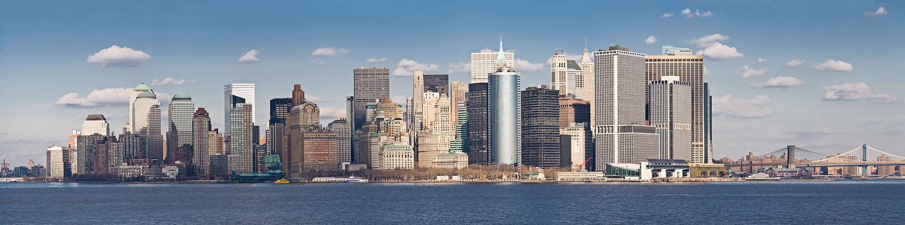

|  | |
Меню |
Сан-Антонио
Сан-Антонио (англ. San Antonio) — город в США, расположенный на юге штата Техас. Административный центр округа Беар. Сан-Антонио является 2-м по численности городом Техаса (после Хьюстона) и 7-м по США (1 382 951 млн чел. по данным на 2012 год). Центр промышленности и туризма. В Сан-Антонио находится крепость Аламо — символ обретения независимости Техаса. Популярное место отдыха у туристов, три миллиона которых ежегодно прибывает в город — набережная Сан-Антонио, расположенная на одноимённой реке Сан-Антонио. Город был назван в честь святого Антония, день памяти о котором отмечается 13 июня, в день когда испанская экспедиция высадилась на территорию современного Сан-Антонио в 1691 году. Город является одним из центров культуры техано и одним из популярных направлений туризма в Техасе. Среди достопримечательностей можно выделить крепость Аламо, набережную Сан-Антонио, речной театр Арнесон, исторический район Ла Вильита, обзорную башню двух Америк. |
|
Copyright © 2014. Все права защищены. |
|